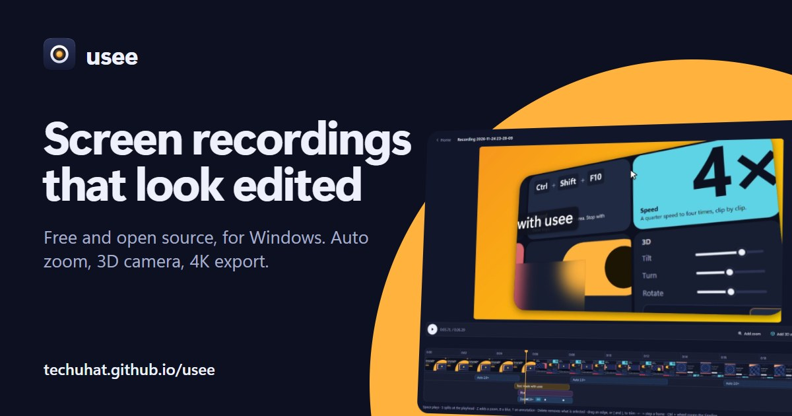
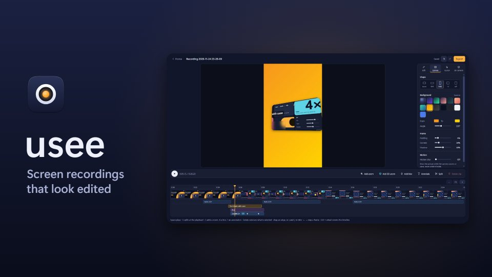
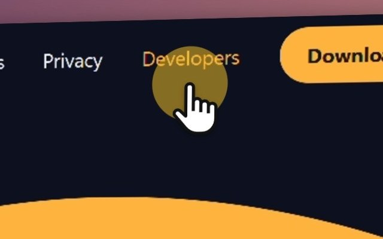

This website, redesigned
Real footage from usee instead of test patterns, a roadmap, this devlog, and a pricing table that took longer to write than the prices did.

What changed in usee, newest first, in words people use. The version for machines is the changelog, and what comes next is on the roadmap.
Real footage from usee instead of test patterns, a roadmap, this devlog, and a pricing table that took longer to write than the prices did.

The Microsoft Store asked for a trailer, so we made one with usee: the screen recordings and clips in it are all usee's own. No other screen recorder was harmed.

It installs without a SmartScreen warning and keeps itself up to date. Certification took about a day; we refreshed Partner Center roughly four hundred times.
Electron 45, a Microsoft Store package, and a privacy policy that covers it. Releases also stopped calling themselves pre-releases. They grow up so fast.
Static HTML and CSS on GitHub Pages, with no cookies and nothing loaded from other sites. A lot of words for “it is just a page”.
A privacy policy, and a fix for a welcome tour that could close the next welcome tour. A race condition, naturally.
The first release, built by GitHub Actions from the public source under the MIT License. It came with an icon drawn for every size Windows shows and a welcome tour, because first impressions matter.
Was the drawn cursor late? We measured it on a real screen instead of arguing about it: the picture runs 3.5 to 7.5 ms behind the pointer on a display, and 6.5 to 9.5 ms ahead of it in a window, steady within a recording. usee now reads the pointer at the picture's moment, and the smoothed cursor stays within a few pixels of the real one.

Words, arrows and boxes over the picture, drawn by the same code in the preview and in the export, so what you see is what you ship.
Record a single window, or drag out an area of the screen. The project names a window by its ID, never its title: window titles are nobody's business. Also new: a three-second countdown, and pictures along each clip on the timeline.
A yellow recorded as 242, 191, 51 played back from an export as 247, 187, 44. FFmpeg had converted the colours with BT.601, while players show HD video with BT.709. The export now uses BT.709 and says so, and a test keeps the yellow yellow.
A test kills usee in the middle of an export and starts it again: the export is reported as failed, nothing half-written is left behind, and no process survives it. Also new: usee steps aside while it records, with a red dot in the tray and Ctrl+Shift+F10 to stop.
MP4 export works end to end, on the graphics card's encoder with Windows' own as the fallback. Then it stopped seeking the video for every frame: usee now reads each recording in order with WebCodecs and a small MP4 reader of its own, and a 3.5-second export went from 14.4 to about 7.5 seconds.
The 3D camera had been there all along, hidden behind a selection. It now has its own tab, five drawn moves and an Add 3D zoom button, next to a new Home, Recordings and Settings.

One switch gives the automatic camera depth: it pushes in toward each action with a gentle turn. For the rest, five presets, a lens for each zoom and dragging to turn the picture.

Backgrounds, padding, rounded corners, a shadow, and shapes from 16:9 to 9:16. Clips play from a quarter speed to four times, and the sound keeps its pitch.
Clicks became camera moves: usee closes in just before each click and holds there. Zooms learned to tilt, turn and rotate in 3D, the cursor stopped trailing the pointer, and the project got its name.

The pointer is recorded (where it moves, its buttons and its shape, never your keys), then smoothed and drawn with a ripple on each click. Zooms and blur arrived, with keyframes.
A blank Electron window that did nothing, securely. By the evening it recorded a screen at 1080p and 60 fps with the microphone, and the timeline could split, trim, delete and undo.